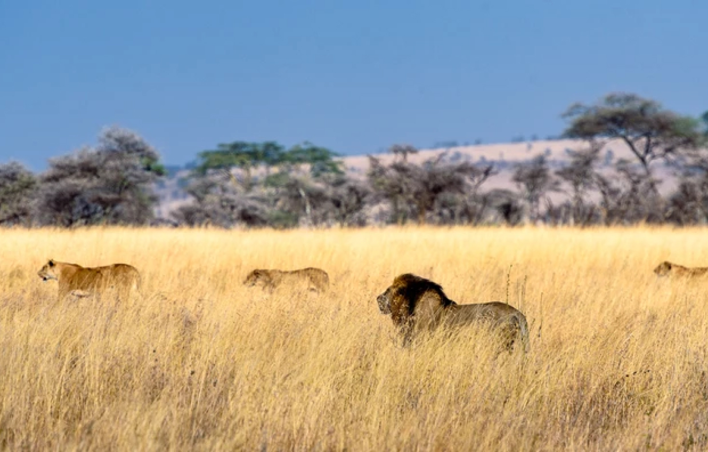
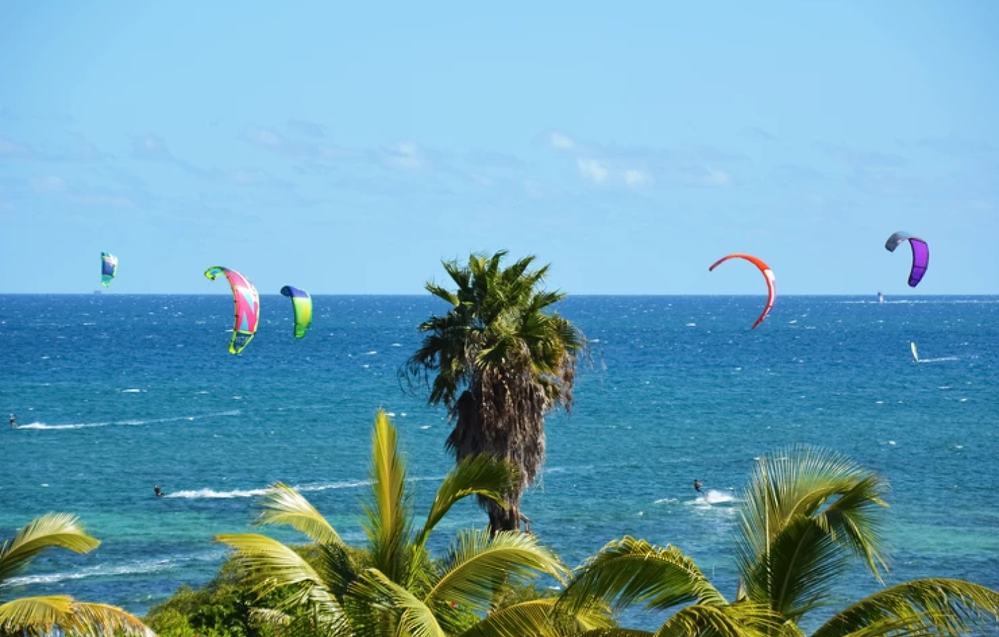

Kenya
Kenya is often known as one of Africa’s best safari destinations, but the East African nation has much more to offer than just wildlife. From beaches on the Pacific Ocean to mountain treks to a fascinating culture. There are dozens of places in Kenya worth visiting!
See The Big Five In The Masai Mara
The Masai Mara is the one place that cannot be skipped on a visit to Kenya: a large game reserve that is known to be the very best place in Kenya to see wildlife. In fact, the Masai Mara, with its wide-open savannah plains, is one of the best places to go on safari in all of Africa. If you are lucky, you will see all of the Big Five here, ie. the lion, leopard, rhinoceros elephant, and Cape buffalo. In addition to the Big Five, you’re likely to see jackals, hippos, baboons, crocodiles, hyenas, cheetahs, gazelles, zebras, and impalas.
Hell's Gate National Park
Hells Gate is a beautiful National Park with a stunning slot canyon that you can hike through. The park is located in the Great Rift Valley, which offers some of the most spectacular scenery in Kenya: unique rock formations, canyons, and vast savannah. Because there aren’t a lot of dangerous animals here, you can go on a bicycle safari and get really close to the animals.

Visit Diani Beach
Diani Beach, which stretches 11 miles (17 kilometers) along the southern coast, is often named the most pristine beach in all of East Africa: white, powdery sand, fringed by palm trees, azure waters, and a colorful coral reef. It’s the perfect place to relax for a few days after a safari or after exploring nearby Mombasa. If swinging in a hammock isn’t exciting enough for you, you can enjoy watersports such as kitesurfing or jet skiing, or you can snorkel or scuba dive.
